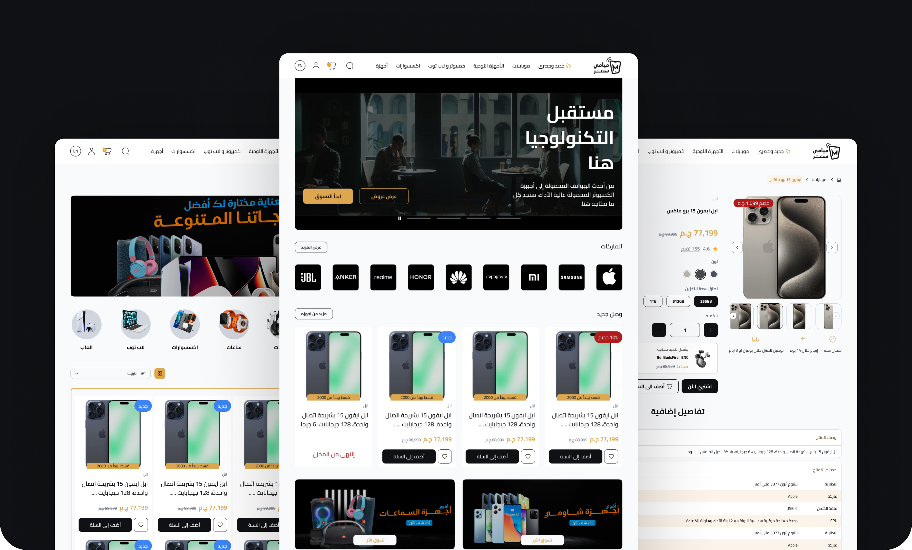
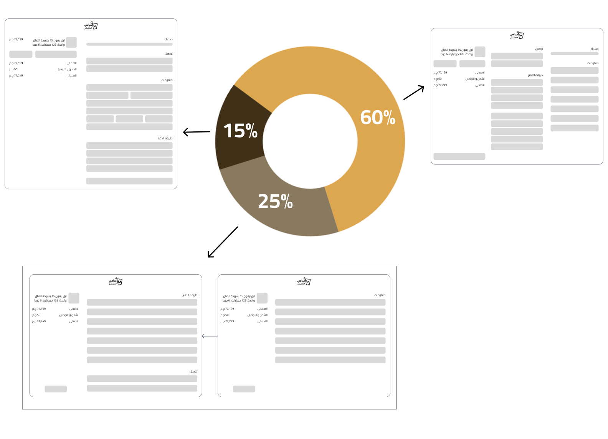

Miami Center: Finding Out Why Customers Didn’t Complete Checkout
I redesigned the e-commerce website of Egypt’s Apple retailer, starting from research instead of assumptions: a traffic audit, a competitor analysis, and an A/B/C test of three checkout flows on live campaign traffic.

Context & Scope
Miami Center sells Apple products, mobile devices, tablets, laptops, and accessories.The problem was clear: people visited the site, but dropped off before completing their purchase.
- Mapped the customer journey and analyzed traffic in Google Analytics and SimilarWeb.
- Ran a user survey and collected insights from the customer service team.
- Designed and tested 3 checkout flows on live traffic through A/B/C testing.
- Modernized the UI, simplified mobile navigation, and applied SEO-friendly design.
User Experience Barriers & Business impact
- Checkout drop-off: Analytics and journey mapping showed a major funnel drop-off at checkout.
- The trust deficit: The survey and customer service feedback showed users saw the site as outdated, which reduced their trust and willingness to buy.
- Cluttered mobile experience: the website is not mobile-friendly, Causing frustration for moble shoppers.
- Weak Organic Discovery (SEO): Heavy, uncompressed images slowed page speed and drove up bounce rates, while missing or non-descriptive alt text hurt product search indexing.
Insight 01: Customers didn’t trust the site.
Survey and customer service feedback pointed to the same thing: the site looked outdated.
- Decision (Modernized UI): Redesigned product pages with clean typography, generous spacing, and clear product details.
- Decision (Prominent trust badges): Added official warranty badges, secure payment icons, and return policy chips next to purchase actions.
Insight 02: Checkout Friction Was the Main Drop-Off Point
Journey mapping showed customers abandoned their carts when faced with repetitive form fields and confusing payment selection.
- Decision (3-Flow A/B/C Testing): Built and tested 3 checkout flows on live campaign traffic instead of guessing
Insight 03: Poor Mobile Responsiveness Hurt Browsing
The original website was poorly adapted for smaller screens, making mobile browsing difficult and frustrating.
- Decision (Mobile-First Responsive Design): Redesigned the entire interface with a mobile-first approach, optimizing layouts, touch targets, and navigation for seamless responsiveness across all mobile devices.
Live Traffic A/B/C Testing
To validate the redesign with real user behavior, we routed campaign traffic to the three checkout versions:
- Evaluation: Flows were measured on Purchase Completion Rate (percentage of users who initiated checkout and reached the order confirmation screen).
- Result: Flow B outperformed both the multi-step and single-page flows. It eliminated form fatigue while keeping steps clear and predictable.
- Launch: Flow B was shipped as the permanent checkout experience.

Delivering a website and mobile responsive for Miami


Impact & Results
- Data-Driven Checkout: Identified and deployed the top-performing checkout flow out of 3 live-tested options, increasing purchase completion.
- Rebuilt Brand Credibility: Shifted user perception from an outdated site to a trusted Apple destination.
- Improved Organic Readiness: Upgraded the site architecture with SEO-friendly standards for better search visibility.